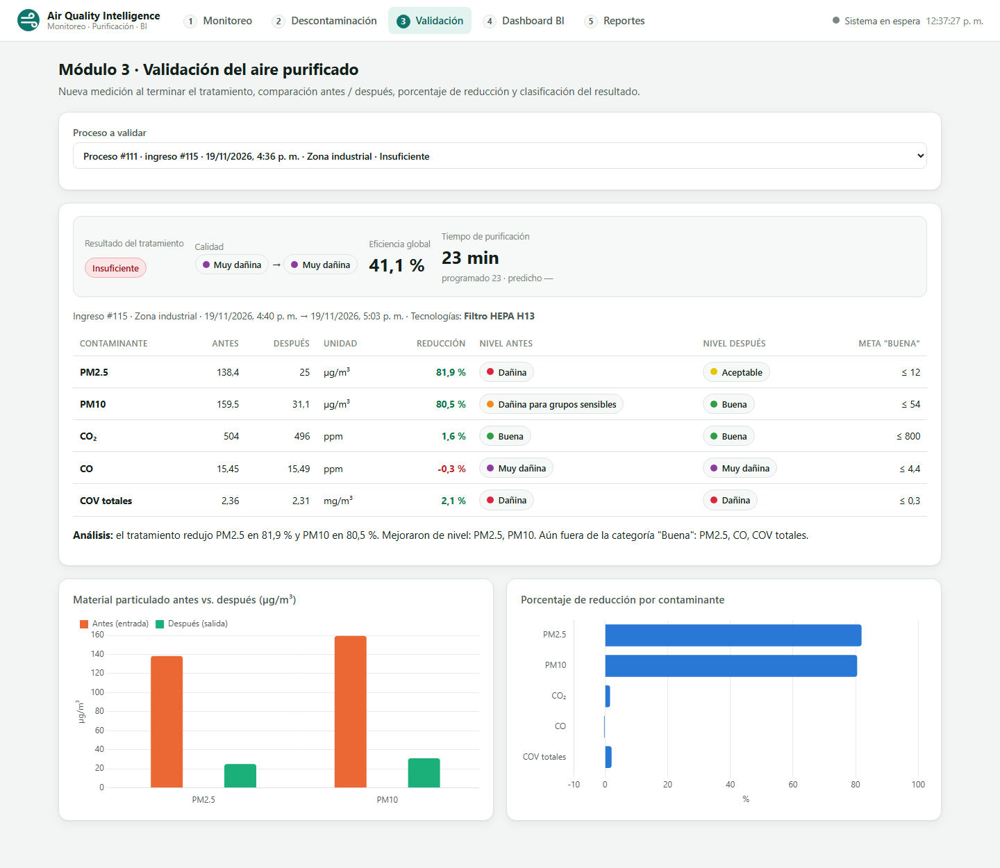
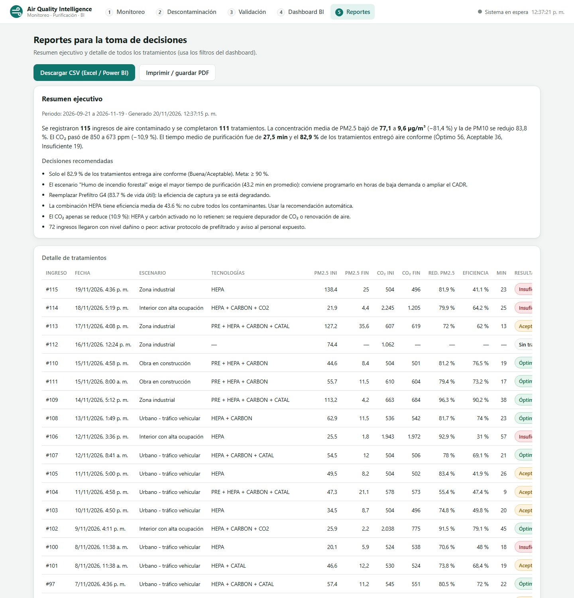

Sistema inteligente para el monitoreo, descontaminación y purificación del aire mediante tecnología y software
Informe técnico
José Fernando Téllez
Inteligencia de Negocios
Repositorio: https://github.com/<usuario>/air-quality-intelligence
Video demostrativo: <enlace de YouTube>
20 de noviembre de 2026
Cuando se habla de contaminación del aire casi siempre se piensa en el humo de los carros, pero el problema va más allá. Las partículas finas (PM2.5 y PM10) entran a los pulmones, el monóxido de carbono (CO) es tóxico incluso en concentraciones bajas y el dióxido de carbono (CO₂) acumulado en un salón lleno de gente produce cansancio y dolor de cabeza. Es decir, el aire “malo” no es uno solo: depende de dónde venga.
La actividad planteaba una pregunta concreta: ¿cómo desarrollar una aplicación inteligente que permita identificar el ingreso de aire contaminado, analizar sus componentes, controlar el proceso de descontaminación y verificar la calidad del aire purificado mediante indicadores y herramientas de inteligencia de negocios?
Mi respuesta fue construir Air Quality Intelligence, una aplicación web que simula una cámara de purificación. El aire entra, los sensores lo miden, el sistema decide qué filtros usar, se purifica durante un tiempo controlado y al final se vuelve a medir para saber si de verdad quedó limpio. Todo lo que pasa queda guardado en una base de datos y se analiza en un dashboard.
Objetivo general. Diseñar y desarrollar una aplicación de inteligencia de negocios que monitoree la calidad del aire, identifique los contaminantes, simule el proceso de purificación y muestre los resultados en indicadores que sirvan para tomar decisiones.
Objetivos específicos.
Organicé el sistema en las cuatro partes que pedía la guía. Primero está la entrada de aire, donde los sensores miden PM2.5, PM10, CO₂, CO y, como extra, compuestos orgánicos volátiles (COV). Después viene el sistema de purificación, una cámara de 60 m³ con cinco tecnologías distintas. El software BI recibe los datos, aplica las reglas y alimenta el dashboard. Por último, la base de datos guarda todas las mediciones: las de entrada, las que se toman cada minuto durante el proceso y las de salida.
Figura 1. Arquitectura general del sistema.
En cuanto a tecnologías, tomé algunas decisiones que vale la pena explicar. La guía sugería React y MySQL o PostgreSQL. Preferí JavaScript sin frameworks y SQLite porque así la aplicación funciona en cualquier computador con solo tener Node.js instalado: no hay que montar un servidor de base de datos ni instalar paquetes. Para no cerrar la puerta a PostgreSQL dejé el script equivalente en db/schema_postgresql.sql.
| Capa | Tecnología | Para qué se usa |
|---|---|---|
| Interfaz | HTML, CSS, JavaScript y Chart.js | Las cinco pantallas de la aplicación y los gráficos |
| Servidor | Node.js | API REST, simulación de sensores y del proceso, reglas de alerta |
| Base de datos | SQLite (con script para PostgreSQL) | Guardar ingresos, mediciones, procesos, alertas y filtros |
| Análisis | Node.js y Python | Estadística antes/después, regresión y exportación a CSV para Power BI |
Cada vez que entra aire a la cámara se crea un registro al que llamé lote. A ese lote se le asocian todas sus mediciones y el proceso de purificación que se le aplicó. La tabla más importante para el análisis es en realidad una vista, v_comparacion, que pone en una misma fila los valores de antes y de después. De ahí sale casi todo el dashboard.
| Tabla | Qué guarda |
|---|---|
| lotes | Fecha y hora del ingreso, de dónde viene el aire, ubicación, si la medición fue automática o manual, y el nivel con el que llegó. |
| mediciones | Los valores de los cinco contaminantes en cada momento: entrada, cada minuto del proceso y salida. |
| procesos | Filtros usados, tiempo programado, tiempo real, tiempo que predijo el modelo, porcentaje de reducción y resultado final. |
| alertas | Tipo, gravedad, contaminante, valor medido, umbral y si ya fue atendida. |
| filtros | Las cinco tecnologías con su capacidad, su vida útil y cuántas horas llevan de uso. |
Para que la clasificación no fuera inventada, usé como base el Índice de Calidad del Aire de Colombia (Resolución 2254 de 2017) en el caso del material particulado. Para el CO tomé los cortes de la EPA, para el CO₂ las recomendaciones de ventilación de ASHRAE y para los COV las guías de la agencia ambiental alemana. El nivel global del aire lo define el contaminante que esté peor: si todo está bien menos el CO, el aire se clasifica según el CO.
| # | Nivel | PM2.5 µg/m³ | PM10 µg/m³ | CO₂ ppm | CO ppm | COV mg/m³ |
|---|---|---|---|---|---|---|
| 1 | Buena | ≤ 12 | ≤ 54 | ≤ 800 | ≤ 4.4 | ≤ 0.3 |
| 2 | Aceptable | 12 – 37 | 54 – 154 | 800 – 1000 | 4.4 – 9.4 | 0.3 – 0.5 |
| 3 | Dañina para grupos sensibles | 37 – 55 | 154 – 254 | 1000 – 1500 | 9.4 – 12.4 | 0.5 – 1 |
| 4 | Dañina | 55 – 150 | 254 – 354 | 1500 – 2000 | 12.4 – 15.4 | 1 – 3 |
| 5 | Muy dañina | 150 – 250 | 354 – 424 | 2000 – 5000 | 15.4 – 30.4 | 3 – 10 |
| 6 | Peligrosa | > 250 | > 424 | > 5000 | > 30.4 | > 10 |
| Tecnología | Cómo funciona | Qué elimina | CADR m³/h | Vida útil (h) |
|---|---|---|---|---|
| Prefiltro G4 | Malla sintética plisada | PM10 (partículas gruesas) | 500 | 500 |
| Filtro HEPA H13 | Fibra de vidrio de alta eficiencia | PM2.5 y PM10 (99,97 % a 0,3 µm) | 320 | 2000 |
| Carbón activado | Adsorción en lecho de carbón granular | COV, olores y gases orgánicos | 260 | 1000 |
| Catalizador de CO | Oxidación catalítica (hopcalita) CO → CO₂ | Monóxido de carbono | 220 | 3000 |
| Depurador de CO₂ | Adsorción en zeolita + renovación controlada | Dióxido de carbono | 180 | 1500 |
Para que la simulación se pareciera a la realidad no quise usar números al azar. Modelé la cámara como un espacio donde el aire está bien mezclado: cada minuto los filtros limpian una parte del aire y la concentración baja de forma exponencial, primero rápido y luego cada vez más despacio. La ecuación es:
C(t) = C∞ + (C0 − C∞) · e−k·t, k = Σ (CADRi · ηi · di) / V
C0 es la concentración con la que llega el aire y C∞ la mínima a la que se puede llegar. La constante k depende de cuánto aire limpia cada filtro (CADR), de qué tan eficiente es con ese contaminante (η) y del volumen de la cámara (V). También agregué un factor de desgaste (d): un filtro viejo pierde hasta el 35 % de su eficiencia, igual que pasa en la vida real.
Lo útil de esta ecuación es que se puede despejar el tiempo. Así, apenas llega el aire, la aplicación ya sabe cuántos minutos necesitará para dejarlo en nivel “Buena”. Además, mientras el proceso avanza, vuelve a calcular k con las lecturas reales (por mínimos cuadrados) y corrige el tiempo restante.
Es la pantalla de entrada. Se escoge de dónde viene el aire (tráfico, zona industrial, humo de incendio, un salón con mucha gente o una obra) y al pulsar Detectar ingreso de aire los sensores toman la medición. También se pueden escribir los valores a mano, por ejemplo para probar un caso concreto. La aplicación guarda la fecha y la hora, calcula el índice de calidad del aire, pinta cada contaminante con el color de su nivel y, si algo supera los límites, genera alertas. Al lado aparece qué filtros recomienda y cuánto tiempo cree que va a tardar.

Figura 2. Pantalla de monitoreo con un ingreso de zona industrial.
Aquí se controla la purificación. Los filtros recomendados ya vienen marcados, pero se pueden cambiar. Si se quita uno necesario, por ejemplo el depurador de CO₂ cuando el CO₂ está alto, la aplicación avisa que ese contaminante no va a bajar. También se fija el tiempo de funcionamiento y se puede pedir que el proceso se detenga solo cuando el aire llegue a “Buena”. Durante la simulación se ve el ventilador girando, la curva de cada contaminante y una tabla que se va llenando minuto a minuto. Cada una de esas lecturas queda en la base de datos.

Figura 3. Proceso de descontaminación y registro de cada minuto.
No basta con suponer que el aire quedó limpio: hay que medirlo otra vez. Al terminar el proceso se hace una nueva medición y se compara con la de entrada. Para cada contaminante se calcula cuánto se redujo y si cambió de nivel. Con eso el tratamiento se clasifica como Óptimo (todo quedó en “Buena” con al menos 50 % de reducción), Aceptable (quedó en “Aceptable” o mejor) o Insuficiente (el aire sigue siendo dañino y no debería liberarse).

Figura 4. Comparación antes y después de un tratamiento.
Esta es la parte pensada para quien toma decisiones, no para quien opera la máquina. Arriba están los seis indicadores: PM2.5 antes y después, CO₂ en ppm, porcentaje de reducción, tiempo promedio de purificación, porcentaje de aire que sale conforme y alertas abiertas. Debajo hay cinco gráficos, el estado de los filtros, una lista de recomendaciones que la aplicación genera sola y la tabla de alertas. Todo se puede filtrar por fechas y por tipo de escenario.

Figura 5. Dashboard: filtros, indicadores y gráficos principales.

Figura 6. Dashboard: tiempos por escenario, filtros, recomendaciones y alertas.
La guía pedía una regla de alertas o un modelo predictivo. Implementé las dos cosas porque se complementan: las reglas avisan cuando algo va mal y el modelo ayuda a planear.
| Regla o modelo | Cuándo se activa | Qué hace |
|---|---|---|
| Contaminación en la entrada | Un contaminante llega en nivel 3 o más | Genera una alerta (media, alta o crítica según el nivel) y recomienda filtros |
| Eficiencia baja | A la mitad del tiempo programado un contaminante crítico no ha bajado ni el 40 % | Avisa que hay que revisar los filtros elegidos o su estado |
| Salida fuera de norma | El aire tratado sigue en nivel 3 o peor | Indica que no se debe liberar y que hay que repetir el tratamiento |
| Filtro desgastado | Un filtro pasa del 80 % de su vida útil | Pide programar el cambio |
| Modelo predictivo | Al iniciar y durante cada proceso | Estima el tiempo total y el tiempo que falta |
Para tener suficientes datos que analizar generé dos meses de operación simulada, del 21 de septiembre al 19 de noviembre. En ese periodo entraron 115 lotes de aire y 111 pasaron por el proceso completo. Algunos se dejaron sin tratar y en otros se simularon errores del operador, como usar solo el filtro HEPA o programar muy poco tiempo, para ver si el sistema los detectaba.
| Contaminante | Unidad | Promedio antes | Promedio después | Reducción media |
|---|---|---|---|---|
| PM2.5 | µg/m³ | 77,08 | 9,56 | 81,4 % |
| PM10 | µg/m³ | 164,47 | 16,13 | 83,8 % |
| CO₂ | ppm | 851,35 | 673,02 | 10,9 % |
| CO | ppm | 8,57 | 3,69 | 37,1 % |
| COV totales | mg/m³ | 0,96 | 0,37 | 50,5 % |
El resultado más claro está en el material particulado: el PM2.5 bajó en promedio un 81,4 % y el PM10 un 83,8 %. Para confirmar que la diferencia no era casualidad apliqué una prueba t pareada, y en todos los contaminantes salió significativa (el detalle está en docs/analisis_resultados.md). El CO₂, en cambio, apenas bajó un 10,9 %. Al principio pensé que era un error, pero tiene sentido: solo una parte de los tratamientos incluyó el depurador de CO₂, y el catalizador, al eliminar el CO, lo convierte justamente en CO₂.
En promedio cada purificación tardó 27,5 minutos y el 82,9 % de los tratamientos dejó el aire en condiciones aceptables o mejores (56 óptimos, 36 aceptables y 19 insuficientes).
Un caso concreto: el lote #109, de zona industrial, llegó con 113,2 µg/m³ de PM2.5 y 17,67 ppm de CO. Después de 38 minutos con PRE + HEPA + CARBON + CATAL salió con 4,2 µg/m³ y 2,62 ppm. El modelo había calculado 39,7 minutos.
| Escenario | Ingresos | PM2.5 inicial | Tiempo medio (min) | Eficiencia | Insuficientes |
|---|---|---|---|---|---|
| Urbano - tráfico vehicular | 44 | 45,9 | 18,0 | 60,2 % | 4 |
| Interior con alta ocupación | 23 | 22,9 | 37,8 | 64,5 % | 6 |
| Zona industrial | 18 | 117,9 | 30,1 | 76,3 % | 4 |
| Humo de incendio forestal | 17 | 212,2 | 43,2 | 84,8 % | 4 |
| Obra en construcción | 13 | 60,0 | 18,2 | 73,3 % | 1 |
El humo de incendio es el caso más exigente: llega con mucho material particulado y necesita en promedio 43,2 minutos. El aire urbano, en cambio, se limpia en unos 18,0 minutos. Algo que no esperaba es que el aire de un salón con mucha gente tarde tanto, aunque casi no tenga partículas. La razón es el CO₂, que es el contaminante más lento de eliminar.
| Tecnologías | Procesos | Eficiencia | Tiempo medio (min) |
|---|---|---|---|
| PRE + HEPA + CARBON + CATAL | 31 | 79,5 % | 28,9 |
| HEPA + CARBON + CO2 | 18 | 69,4 % | 33,9 |
| HEPA | 15 | 43,6 % | 34,9 |
| HEPA + CARBON + CATAL | 14 | 57,7 % | 16,0 |
| PRE + HEPA + CARBON | 9 | 75,7 % | 18,7 |
| PRE + HEPA + CARBON + CATAL + CO2 | 8 | 76,9 % | 36,1 |
| HEPA + CARBON | 6 | 68,9 % | 20,0 |
| HEPA + CATAL | 4 | 67,0 % | 18,3 |
Esta tabla resume bien la idea central del trabajo. Cuando se usó solo HEPA la eficiencia promedio fue de apenas 43,6 %, mientras que la combinación PRE + HEPA + CARBON + CATAL llegó a 79,5 %. El HEPA es muy bueno, pero solo para partículas. Si el aire trae gases, hay que acompañarlo con otras tecnologías.
Primero probé algo sencillo: una regresión lineal entre el PM2.5 inicial y el tiempo de purificación. Dio tiempo ≈ 17,70 + 0,122 × PM2.5 inicial, con un R² de 0,416. Es un ajuste moderado, y la explicación es que el tiempo no depende solo de las partículas: si hay mucho CO₂ o CO, el proceso se alarga aunque el PM2.5 sea bajo. Por eso la aplicación usa el modelo exponencial, que calcula el tiempo contaminante por contaminante. Ese modelo se equivocó en promedio 1,0 minuto frente al tiempo real.
En total se generaron 329 alertas. La mayoría (265) fueron por aire que llegó muy contaminado, lo cual es normal en este tipo de planta. Las más útiles para la operación fueron las 44 de eficiencia baja y las 19 de salida fuera de norma, porque coinciden justamente con los casos en que se simuló un error del operador.
| Tipo | Gravedad | Cantidad |
|---|---|---|
| CONTAMINACION_ENTRADA | alta | 108 |
| CONTAMINACION_ENTRADA | critica | 56 |
| CONTAMINACION_ENTRADA | media | 101 |
| EFICIENCIA_BAJA | alta | 44 |
| FILTRO_SATURADO | media | 1 |
| SALIDA_FUERA_NORMA | alta | 12 |
| SALIDA_FUERA_NORMA | critica | 7 |

Figura 7. Reporte con el resumen ejecutivo.
Con los datos de estos dos meses, la aplicación generó automáticamente estas recomendaciones:
La aplicación cumple el ciclo completo que pedía el reto: detecta el aire que entra, lo mide y lo clasifica, controla la purificación, verifica el resultado y convierte todo eso en indicadores. Cada medición queda guardada, así que cualquier número del dashboard se puede rastrear hasta el dato original.
La lección más importante fue que el filtro correcto depende del contaminante. El HEPA elimina casi todas las partículas, pero no hace nada contra el CO, los COV o el CO₂. Un sistema que use siempre el mismo filtro puede mostrar buenos resultados en PM2.5 y aun así liberar aire que no es seguro.
También me pareció valioso el enfoque de inteligencia de negocios. Más allá de mostrar gráficos bonitos, los indicadores sirven para tomar decisiones concretas: cuándo cambiar un filtro, qué tipo de aire conviene tratar en horas de menos demanda o si vale la pena invertir en un equipo con más capacidad.
La principal limitación es que los datos son simulados. Aunque el modelo se basa en ecuaciones reales, el siguiente paso sería conectar sensores de verdad. Por ejemplo, un PMS5003 para partículas, un SCD30 para CO₂ y un MQ-7 para CO, conectados a un ESP32 que envíe los datos a la misma API. La aplicación ya está preparada para eso, y la base de datos se puede migrar a PostgreSQL con el script incluido.